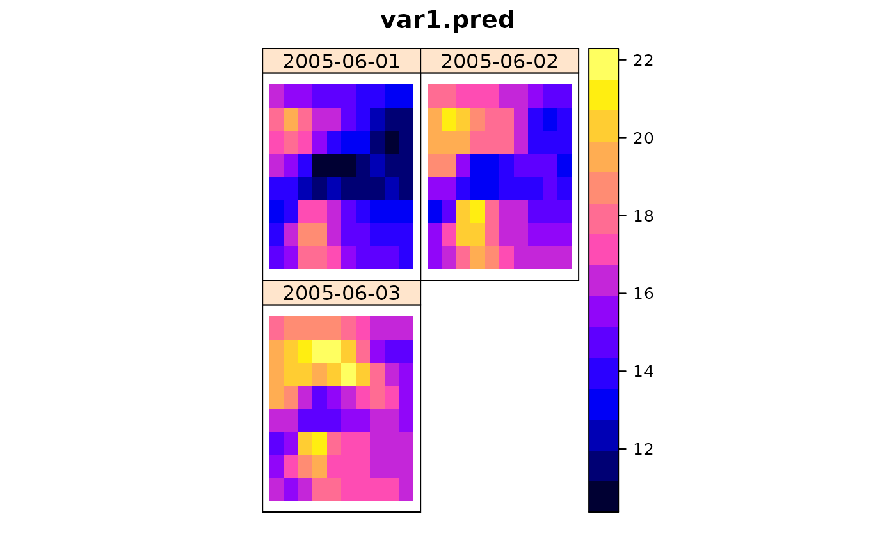

krigeST.RdFunction for ordinary global and local and trans Gaussian spatio-temporal kriging on point support
krigeST(formula, data, newdata, modelList, beta, y, ..., nmax = Inf, stAni = NULL, computeVar = FALSE, fullCovariance = FALSE, bufferNmax=2, progress=TRUE) krigeSTTg(formula, data, newdata, modelList, y, nmax=Inf, stAni=NULL, bufferNmax=2, progress=TRUE, lambda = 0)
| formula | formula that defines the dependent variable as a linear
model of independent variables; suppose the dependent variable has name
|
|---|---|
| data | ST object: should contain the dependent variable and independent variables. |
| newdata | ST object with prediction/simulation locations in space and time; should contain attribute columns with the independent variables (if present). |
| modelList | object of class |
| y | matrix; to krige multiple fields in a single step, pass data
as columns of matrix |
| beta | The (known) mean for simple kriging. |
| nmax | The maximum number of neighbouring locations for a spatio-temporal local neighbourhood |
| stAni | a spatio-temporal anisotropy scaling assuming a metric spatio-temporal space. Used only for the selection of the closest neighbours. This scaling needs only to be provided in case the model does not have a stAni parameter, or if a different one should be used for the neighbourhood selection. Mind the correct spatial unit. Currently, no coordinate conversion is made for the neighbourhood selection (i.e. Lat and Lon require a spatio-temporal anisotropy scaling in degrees per second). |
| ... | further arguments used for instance to pass the model into vgmAreaST for area-to-point kriging |
| computeVar | logical; if TRUE, prediction variances will be returned |
| fullCovariance | logical; if FALSE a vector with prediction variances will be returned, if TRUE the full covariance matrix of all predictions will be returned |
| bufferNmax | factor with which nmax is multiplied for an extended search radius (default=2). Set to 1 for no extension of the search radius. |
| progress | whether a progress bar shall be printed for local spatio-temporal kriging; default=TRUE |
| lambda | The value of lambda used in the box-cox transformation. |
Function krigeST is a R implementation of the kriging function from
gstat using spatio-temporal covariance models following the
implementation of krige0. Function krigeST offers some
particular methods for ordinary spatio-temporal (ST) kriging. In particular,
it does not support block kriging or kriging in a distance-based
neighbourhood, and does not provide simulation.
An object of the same class as newdata (deriving from
ST). Attributes columns contain prediction and prediction
variance.
Spatio-Temporal Geostatistics using gstat. Benedikt Graeler, Edzer Pebesma, Gerard Heuvelink. The R Journal, accepted.
N.A.C. Cressie, 1993, Statistics for Spatial Data, Wiley.
Pebesma, E.J., 2004. Multivariable geostatistics in S: the gstat package. Computers \& Geosciences, 30: 683-691.
Edzer Pebesma, Benedikt Graeler
library(sp) library(spacetime) sumMetricVgm <- vgmST("sumMetric", space = vgm( 4.4, "Lin", 196.6, 3), time = vgm( 2.2, "Lin", 1.1, 2), joint = vgm(34.6, "Exp", 136.6, 12), stAni = 51.7) data(air) suppressWarnings(proj4string(stations) <- CRS(proj4string(stations))) rural = STFDF(stations, dates, data.frame(PM10 = as.vector(air))) rr <- rural[,"2005-06-01/2005-06-03"] rr <- as(rr,"STSDF") x1 <- seq(from=6,to=15,by=1) x2 <- seq(from=48,to=55,by=1) DE_gridded <- SpatialPoints(cbind(rep(x1,length(x2)), rep(x2,each=length(x1))), proj4string=CRS(proj4string(rr@sp))) gridded(DE_gridded) <- TRUE DE_pred <- STF(sp=as(DE_gridded,"SpatialPoints"), time=rr@time) DE_kriged <- krigeST(PM10~1, data=rr, newdata=DE_pred, modelList=sumMetricVgm)#> Warning: The spatio-temporal variogram model does not carry the strongly recommended attribute 'temporal unit'. #> The unit 'days' has been assumed. krigeST could not check whether the temporal distances between locations and in the variogram coincide.